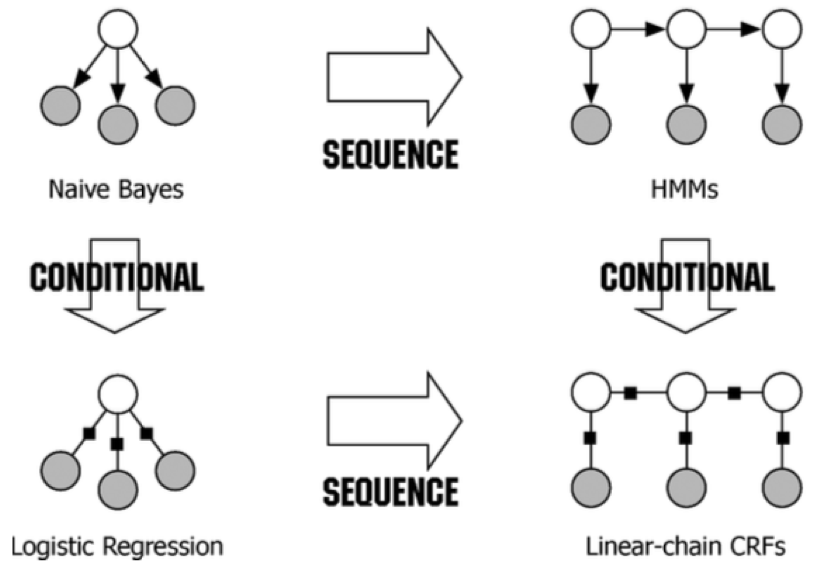
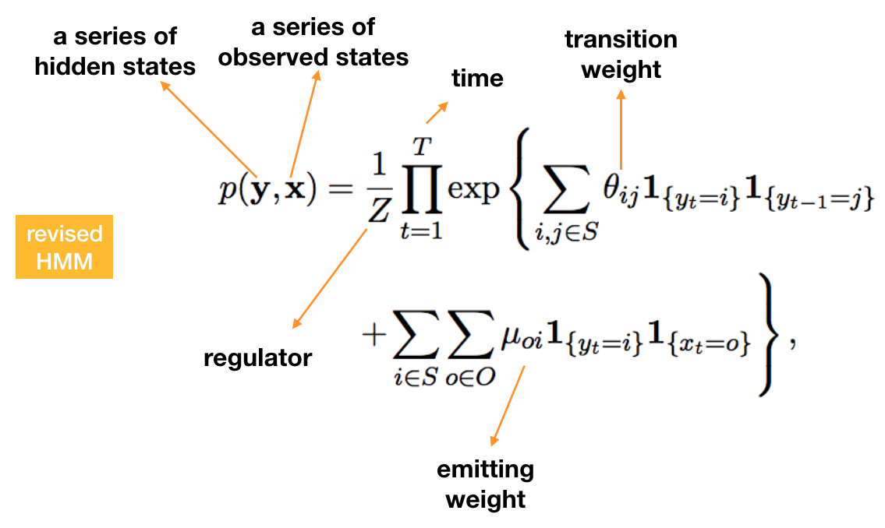
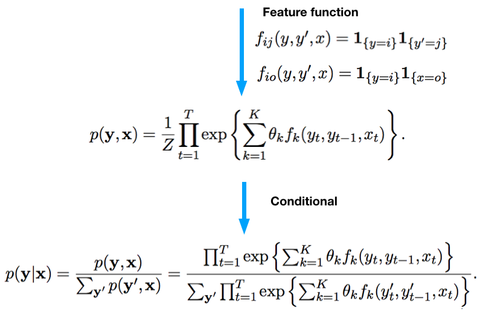
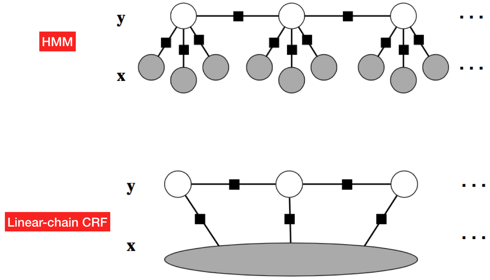

From Naive Bayes to Linear-chain CRF
Updated:
Naive Bayes, Hidden Markov model(HMM) and Linear-chain Conditional Random Field(CRF) are related to each other. Here, starting with Naive Bayes we derive the Linear-chain CRFs model step by step.

Naive Bayes model
Naive Bayes assumes that the value of a particular feature is independent of the value of any other feature given the class variable. Let’s represent unobserved(hidden) state with $y$ and observed states with $\vec{x} \in R^K$. Hence it can be written as
$$
p(y,\vec{x}) = p(y)\prod_{k=1}^{K}p(x_k|y)
$$
Naive Bayes to HMM
HMM is used to model a event sequence. We can regard every event at a particluar time step as a Naive Bayes model within which the observed states only depend on hidden state of current event. Since HMM has Markov property which means the conditional probability distribution of future hidden states of the process depends only upon the present hidden state, not on the sequence of events that preceded it. Therefore, we consider the HMM as a series of Naive Bayes events.
$$
p(\vec{y},\vec{x}) = \prod_{t=1}^{T}p(y_t|y_{t-1})p(x_k|y_t)
$$
HMM to Linear-chain CRF
Linear-chain CRF removes the constraint that observed states only depend on the hidden state in the same event. In other words, Linear-chain CRF provides the ability to model how observed states affect each other. We start with revised HMM.


The last step is to remove the HMM constraint mentioned above which is replace $x_t$ with $\vec{x}$. Hence, we get
$$
p(\vec{y}|\vec{x}) = \frac{1}{Z(\vec{x})}\prod_{t=1}^{T}\exp(\sum_{k=1}^{K}\theta_kf_k(y_t,y_{t-1},\vec{x},t))
$$
Comparison between HMM and Linear-chain CRF

References
[1] Charles Sutton al. An Introduction to Conditional Random Fields (pp. 272-286)